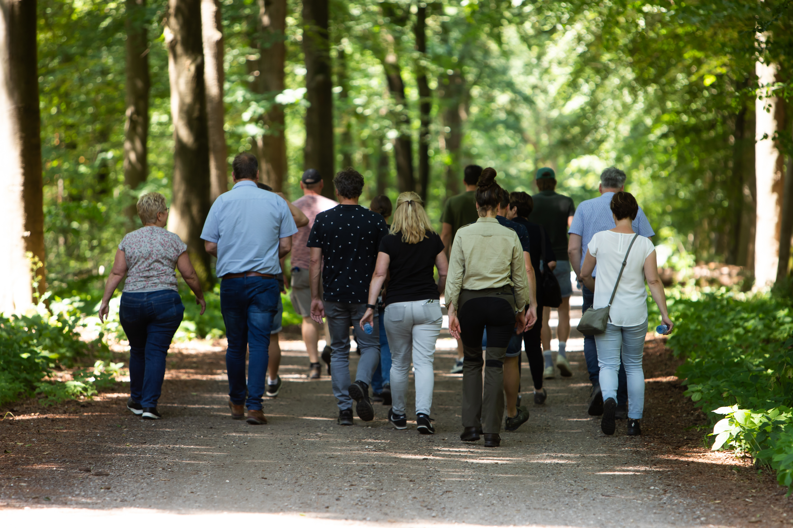

Onze teambuilding in de natuur biedt een perfecte gelegenheid voor teams om buiten de werkomgeving samen te werken en te communiceren. Dit arrangement is ontworpen om de teamgeest te versterken door middel van activiteiten die de kracht van de natuur benutten.
Of het nu gaat om een survivaltocht, een spannende oriëntatieloop of creatieve buitenactiviteiten, we zorgen ervoor dat je team samenwerkt om uitdagingen te overwinnen en successen te vieren in een natuurlijke omgeving.
Dit arrangement is perfect voor bedrijven die hun team willen versterken en tegelijkertijd willen genieten van de rust en schoonheid van de natuur. Ontdek de kracht van samenwerking en de frisse lucht terwijl je werkt aan het verbeteren van de communicatie en het vertrouwen binnen je team.
Bekijk onze Arrangementen